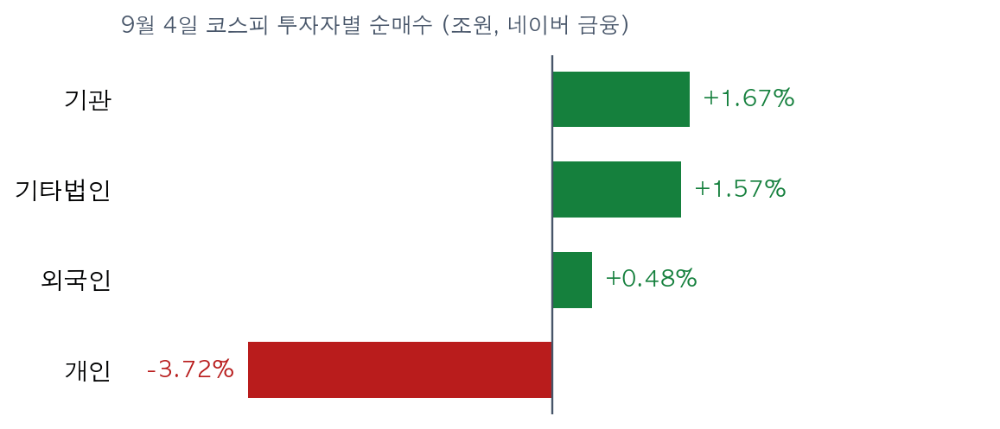

고용 16만2000명, 서울은 아직 이 숫자를 반영하지 못했습니다
한국경제 · 매일경제 9월 5일자 지면 + IBD Big Picture 9월 4일 17:40 (미 동부) | 시장 수치는 9월 4일 종가 기준 | This is the Rex Way, ZekiRex™
코스피 9/4 6,687.21 | 코스닥 9/4 813.50 | 외국인 순매수 +4,796억 | IBD 노출도 60~80% | 나스닥 분산일 4 / 5 | 현금 비중 0.01% |
실행 요약
|
월요일 9월 7일은 한국 증시가 열리고 미국 증시는 노동절로 쉽니다. 한국이 이 고용 숫자를 가장 먼저 반영하는 시장이 됩니다.
지금 할 일
월요일 9월 7일 개장에 그대로 쓰는 기준입니다
보유 종목 네 개
손절선까지 2.06%밖에 남지 않았습니다. 매수가 대비 −6.07%입니다. 아래 손절선이 깨지면 규칙대로 팝니다. 미리 팔지도, 기다리지도 않습니다. 손절 59,156원 (매수가 64,300원 대비 −8%) |
금요일 5,000원 올랐습니다. 매수가 대비 +6.63%입니다. 저희 업종 순위에서 석유와가스가 1위이고 이 종목의 상대강도는 94입니다. 손절 106,904원 (매수가 116,200원 대비 −8%) |
금요일 620원 올랐습니다. 매수가 대비 +6.06%입니다. 다만 한경 지면이 지목한 환율 하락 부담을 함께 받는 반도체 종목입니다. 손절 11,850원 (매수가 12,880원 대비 −8%) |
금요일 4,800원 내려 매수가와 같은 값이 됐습니다. 수익도 손실도 없습니다. 손절선까지는 8.00% 남아 있습니다. 손절 134,136원 (매수가 145,800원 대비 −8%) |
사고 싶지만 살 수 없는 종목
저희는 한 번에 최대 네 종목만 보유합니다. 그 네 칸이 지금 모두 차 있습니다. 새로 사려면 하나를 먼저 팔아야 합니다. 아래 종목은 저희 기준을 넘었지만 자리가 없어 집행하지 않았습니다.
상대강도 92입니다. 손해보험은 저희 업종 순위 4위입니다. 금리가 오르면 이자 수익이 늘어나는 쪽입니다. |
상대강도 98로 대기 명단에서 가장 높습니다. 건설 업종 순위는 한 주 사이 3계단 올라 5위입니다. |
은행 세 곳의 상대강도는 각각 83, 83, 81입니다. 은행은 업종 순위 8위입니다. 금리 인상 쪽으로 기울수록 유리해지는 자리입니다. |
저희 품질 하한을 넘지 못했습니다. 롯데렌탈은 매출과 이익률 등급이 최하위입니다. 대기와 달리 제외는 지금 후보가 아니라는 뜻입니다. |
자산 배분
| 구분 | 비중 | 근거 |
| 현금 비중 | 0.01% | 118,160원. 보유 칸이 다 차 새로 살 여력이 없습니다 |
| 주식(롱) 비중 | 99.99% | 네 종목에 22~28%씩. 한 종목 상한은 25% 근처입니다 |
| 헤지 비중 | 0% | 저희 전략은 인버스나 선물 헤지를 쓰지 않습니다 |
방어 규칙이 오늘 발동했습니까. 세 가지 중 하나만 가까이 왔습니다.
· 손절 −8%: 타이거일렉이 손절선 2.06% 앞에 있습니다. 나머지 셋은 여유가 있습니다.
· 분산일 방어: IBD 집계로 나스닥 4일, S&P 500 3일입니다. 다섯 일이 되면 주식 비중을 40% 아래로 줄입니다. 아직 발동하지 않았습니다.
· 21일선·50일선 이탈 시 부분 익절: 오늘 해당하는 종목이 없습니다.
· 손절 −8%: 타이거일렉이 손절선 2.06% 앞에 있습니다. 나머지 셋은 여유가 있습니다.
· 분산일 방어: IBD 집계로 나스닥 4일, S&P 500 3일입니다. 다섯 일이 되면 주식 비중을 40% 아래로 줄입니다. 아직 발동하지 않았습니다.
· 21일선·50일선 이탈 시 부분 익절: 오늘 해당하는 종목이 없습니다.
그래서 어떻게 하나: 월요일에 새로 살 돈은 없습니다. 타이거일렉이 손절선을 지키는지만 보시면 됩니다. 그 자리가 열려야 대기 명단의 첫 종목을 살 수 있습니다.
장중 체크리스트
| 볼 것 | 기준선 | 뜻 |
| 외국인 순매수 | 사흘째 순매수인가 | 금요일 +4,796억으로 이틀 연속 샀습니다. 끊기면 되돌림입니다 |
| 원/달러 | 1,358.50원 | 더 내려가면 수출주 이익 추정이 깎입니다 |
| 코스피 지지선 | 6,687.21 | 금요일 종가입니다. 아래로 열면 고용 숫자를 반영하는 중입니다 |
| 타이거일렉 | 59,156원 | 깨지면 규칙대로 팝니다 |
바닥을 확인하는 신호 세 가지. 첫째, 외국인이 사흘 연속 순매수를 이어가는 경우입니다. 둘째, 코스닥이 813선 위에서 하루를 마치는 경우입니다. 셋째, 지수가 내리는 날인데 거래량이 함께 줄어드는 경우입니다.
왜 그런가
질문 하나와 그 근거
오늘의 질문: 금요일 종가에 빠진 것은 무엇입니까
9월 인상 확률 58%가 빠져 있습니다. 한국 증시는 금요일 오후 3시 30분에 문을 닫았습니다. 미국 고용 지표는 그 뒤에 나왔습니다. 그래서 코스피 6,687.21에는 그 결과가 반영될 시간이 없었습니다.
두 신문은 이 숫자를 실었습니다. 지면 마감이 한국 장 마감보다 늦기 때문입니다. 그러니 이번 주말은 드문 구조입니다. 독자는 신문에서 이미 읽었지만, 시장은 아직 값을 매기지 않았습니다.
월요일 9월 7일에는 미국 증시가 노동절로 쉽니다. 평소라면 밤사이 미국 시세가 방향을 알려 주는데, 이번에는 그것이 없습니다. 한국이 먼저 답을 내야 합니다.
두 신문은 이 숫자를 실었습니다. 지면 마감이 한국 장 마감보다 늦기 때문입니다. 그러니 이번 주말은 드문 구조입니다. 독자는 신문에서 이미 읽었지만, 시장은 아직 값을 매기지 않았습니다.
월요일 9월 7일에는 미국 증시가 노동절로 쉽니다. 평소라면 밤사이 미국 시세가 방향을 알려 주는데, 이번에는 그것이 없습니다. 한국이 먼저 답을 내야 합니다.

금요일 미국 증시는 고용 지표 뒤에 내렸습니다. 다우가 가장 많이 밀렸고 소형주는 버텼습니다. 거래량이 줄어 분산일은 늘지 않았습니다. (IBD Big Picture 9월 4일)
매체별 논조
| 매체 | 오늘의 논조 | 근거 |
| 한국경제 | 금리는 위로, 환율은 아래로 — 수출주 이익이 양쪽에서 눌린다 | 9/5자 A10면 · A1면 · A13면 |
| 매일경제 | 고용은 세다. 다만 연준 안에서도 해석이 갈려 9월은 반반이다 | 9/5자 8면 · 11면 |
| IBD | 내렸지만 추세는 살아 있다 — 노출도를 60~80%로 유지한다 | Big Picture 9/4 · Market Pulse 9/4 |
세 매체가 갈리는 지점은 시점입니다. 매경 11면은 가상자산주가 들썩였다고 썼습니다. 그것은 목요일 미국 장의 모습이고, 그때는 금리 동결 기대가 살아 있었습니다. 금요일 고용 지표가 그 기대를 뒤집었습니다. 지면이 틀린 것이 아니라 마감이 이른 것입니다. 한경 A10면은 마감이 조금 늦어 인상 가능성까지 담았습니다.
지면 마감 뒤 미국장이 더한 것
| 항목 | 값 | 한국에 오는 경로 |
| 8월 비농업 고용 | +16만2000명 (예상 5만5000명) | 7월치도 마이너스에서 플러스로 고쳤습니다 |
| 9월 인상 확률 | 58% (전일 49%) | 할인율이 올라가면 성장주가 먼저 눌립니다 |
| 미 국채 10년 | 4.78% | 은행과 보험의 이자 수익이 늘어납니다 |
| 노출도 / 분산일 | 60~80% / 나스닥 4일, S&P 3일 | 아직 비중 축소를 강제하는 자리가 아닙니다 |
| WTI 유가 | 배럴당 91.20달러 | GS 등 정유주의 정제마진과 이어집니다 |
IBD Market Pulse 9월 4일 기준입니다. 거래량이 늘며 오른 주도주는 Samsara(IOT)와 Five Below(FIVE)입니다. 내린 쪽은 UiPath(PATH)와 HP Enterprise(HPE)입니다.

왼쪽 둘은 IBD가 집계한 분산일입니다. 다섯 칸이 차면 주식 비중을 40% 아래로 줄입니다. 오른쪽은 저희 보유 칸이며 네 칸이 모두 찼습니다.
한국 시장과 수급
금요일 한국 증시는 올랐습니다. 코스피는 6,687.21로 마쳤습니다. 저희 국면 판정은 노랑입니다. 일곱 개 기준 중 다섯 개를 넘었고, 50일 이동평균선 아래에 있는 것이 걸립니다.
코스닥은 813.50입니다. 국면은 빨강이고 일곱 개 중 둘만 넘었습니다. 두 시장의 체력이 다르다는 뜻입니다.
코스닥은 813.50입니다. 국면은 빨강이고 일곱 개 중 둘만 넘었습니다. 두 시장의 체력이 다르다는 뜻입니다.

9월 4일 코스피 투자자별 순매수입니다. 개인이 3조7229억원어치를 팔았고 기관과 기타법인과 외국인이 나눠 받았습니다. (네이버 금융, 단위 조원)
주목할 것은 외국인입니다. 목요일 414억원, 금요일 4,796억원을 순매수했습니다. 이틀 연속 샀고 규모가 열 배 넘게 늘었습니다. 직전까지는 매도 우위였으므로 방향이 바뀐 자리입니다. 코스닥에서도 외국인은 2,599억원을 순매수했습니다.
그래서 어떻게 하나: 외국인이 사흘째 사면 금요일 상승이 이어질 가능성이 큽니다. 끊기면 고용 숫자를 뒤늦게 반영하는 흐름으로 보시면 됩니다.
업종 순위
저희가 계산한 9월 3일 기준 상위 업종은 석유와가스, 생명보험, 반도체와반도체장비, 손해보험, 건설 순입니다. 전기장비와 은행도 A등급입니다.
여기에 한 가지 특징이 있습니다. 상위 여덟 중 넷이 보험과 은행입니다. 이들은 금리가 오르면 이자 수익이 늘어나는 쪽입니다. 즉 저희 명단은 이미 금리 상승 쪽으로 기울어 있습니다. 금요일 고용 지표는 그 기울기를 더 밀어 주는 숫자입니다.
여기에 한 가지 특징이 있습니다. 상위 여덟 중 넷이 보험과 은행입니다. 이들은 금리가 오르면 이자 수익이 늘어나는 쪽입니다. 즉 저희 명단은 이미 금리 상승 쪽으로 기울어 있습니다. 금요일 고용 지표는 그 기울기를 더 밀어 주는 숫자입니다.

대기 명단을 업종 색으로 흩은 그림입니다. 여덟 종목이 여덟 개의 생각이 아니라 사실상 금리라는 하나의 생각에 몰려 있습니다.
근거의 무게
표에 섞인 두 가지를 나눠 밝힙니다.
지면이 직접 다룬 것 — 한경 A13면은 반도체와 바이오가 환율 하락으로 이익이 줄 수 있다고 지적했습니다. 저희 보유 종목 중 샘씨엔에스와 타이거일렉이 여기에 해당합니다. 한경 A1면과 A3면은 일본은행의 금리 인상 언급 뒤 엔화가 이틀 만에 강해졌고 140엔까지 갈 수 있다고 봤습니다.
저희가 고른 것 — 종목 이름과 상대강도와 업종 순위는 전부 저희 계산입니다. 신문이 이 종목들을 추천한 것이 아닙니다.
지면이 직접 다룬 것 — 한경 A13면은 반도체와 바이오가 환율 하락으로 이익이 줄 수 있다고 지적했습니다. 저희 보유 종목 중 샘씨엔에스와 타이거일렉이 여기에 해당합니다. 한경 A1면과 A3면은 일본은행의 금리 인상 언급 뒤 엔화가 이틀 만에 강해졌고 140엔까지 갈 수 있다고 봤습니다.
저희가 고른 것 — 종목 이름과 상대강도와 업종 순위는 전부 저희 계산입니다. 신문이 이 종목들을 추천한 것이 아닙니다.
기타 매크로 · 기업 동향
| 주요 이벤트 | 시장 함의 및 리스크 점검 |
| 코스닥 퇴출 기준 강화를 내년 7월로 미뤘습니다 (매경 9/5자 1면, 한경 A3면) | 한계 기업의 정리가 늦어집니다. 시가총액 기준 미달 종목은 여전히 퇴출 대상입니다 |
| 비상장주식이 내년 2월부터 토큰증권으로 거래됩니다 (한경 A1면, 매경 11면) | 증권사와 거래소 인프라 쪽의 중기 재료입니다. 당장 실적에 닿지는 않습니다 |
| 7월 경상수지 흑자가 421억달러로 세계 2위였습니다 (매경 9/5자 9면) | 원화가 강해지는 쪽으로 미는 힘입니다. 수출주 이익 추정에는 부담입니다 |
| 한화에어로스페이스의 천무 크로아티아 수출이 임박했습니다 (한경 A11면, 매경 10면 6800억원) | 방산 수주가 이어집니다. 저희 대기 명단에는 없습니다 |
| 일본항공이 한진칼 지분을 샀습니다 (한경 A13면, 매경 10면) | 항공사 업종은 저희 순위 9위입니다. 공동운항이 주 400편으로 늘어납니다 |
| 청와대가 반도체 대미 투자 논의를 공식화했습니다 (매경 9/5자 1면 · 9면) | 관세를 피하려면 투자하라는 요구입니다. 반도체 기업의 자본 지출이 늘어납니다 |
| 테슬라가 5.9% 내렸습니다 (IBD 9/4) | 로보택시 공개 행사가 기대에 못 미쳤고 안전 기준 조사가 시작됐습니다 |
이번 주 일정
월요일 9월 7일 — 한국 증시는 열리고 미국은 노동절로 쉽니다.
목요일 — 미국 8월 생산자물가가 나옵니다.
금요일 — 미국 8월 소비자물가가 나옵니다. 매경 8면이 짚은 대로 9월 결정의 관건입니다.
이번 주 미국 실적 — 어도비, 오라클, 츄이가 발표합니다.
목요일 — 미국 8월 생산자물가가 나옵니다.
금요일 — 미국 8월 소비자물가가 나옵니다. 매경 8면이 짚은 대로 9월 결정의 관건입니다.
이번 주 미국 실적 — 어도비, 오라클, 츄이가 발표합니다.
데이터 출처 및 유의사항
읽은 자료는 세 가지입니다. 한국경제와 매일경제의 9월 5일자 지면입니다. 그리고 IBD Big Picture 9월 4일 17시 40분(미 동부)과 같은 날 Market Pulse입니다.
확인하지 못한 것을 밝힙니다. 이번 회차는 지면 목차와 웹 본문으로 읽었습니다. 그래서 판(版) 번호는 확인하지 못했습니다. 지면 PDF를 내려받아야 알 수 있는 값입니다. 면 번호는 두 신문의 그날 지면 목차에서 그대로 가져왔습니다.
업종 순위는 9월 3일 기준입니다. 그 이후 값은 아직 계산되지 않았습니다. 한국콜마는 업종 순위표에 잡히지 않아 상대강도를 비워 두었습니다.
시장 수치는 9월 4일 종가 기준이며, 보유 종목 네 개의 종가는 네이버 금융에서 다시 대조했습니다.
확인하지 못한 것을 밝힙니다. 이번 회차는 지면 목차와 웹 본문으로 읽었습니다. 그래서 판(版) 번호는 확인하지 못했습니다. 지면 PDF를 내려받아야 알 수 있는 값입니다. 면 번호는 두 신문의 그날 지면 목차에서 그대로 가져왔습니다.
업종 순위는 9월 3일 기준입니다. 그 이후 값은 아직 계산되지 않았습니다. 한국콜마는 업종 순위표에 잡히지 않아 상대강도를 비워 두었습니다.
시장 수치는 9월 4일 종가 기준이며, 보유 종목 네 개의 종가는 네이버 금융에서 다시 대조했습니다.
이 브리핑은 모의 포트폴리오를 기준으로 작성했으며 투자 자문이 아닙니다. 종목과 가격은 저희 규칙이 무엇을 하는지 보여주기 위한 것이며 매매 권유가 아닙니다. 기사 원문을 옮기지 않고 사실만 저희 문장으로 다시 썼습니다.
ZekiRex™ Capital Management | Proprietary Trading Desk
This is the Rex Way, ZekiRex™
ZekiRex™ Capital Management | Proprietary Trading Desk
This is the Rex Way, ZekiRex™